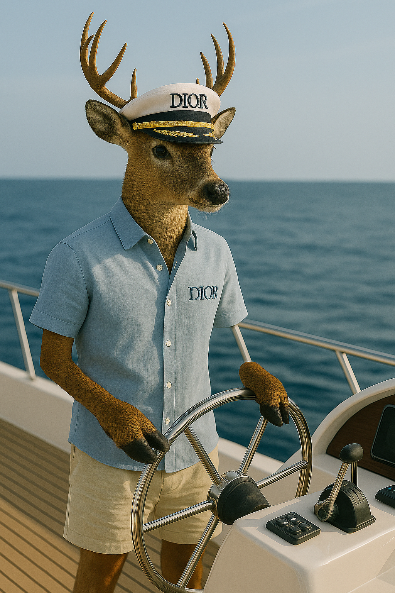
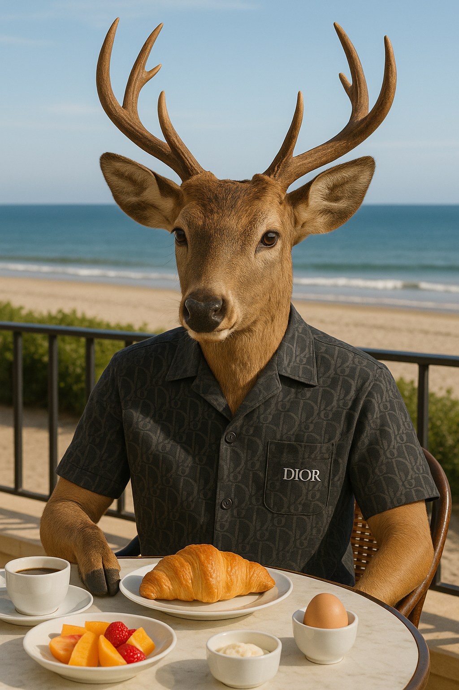
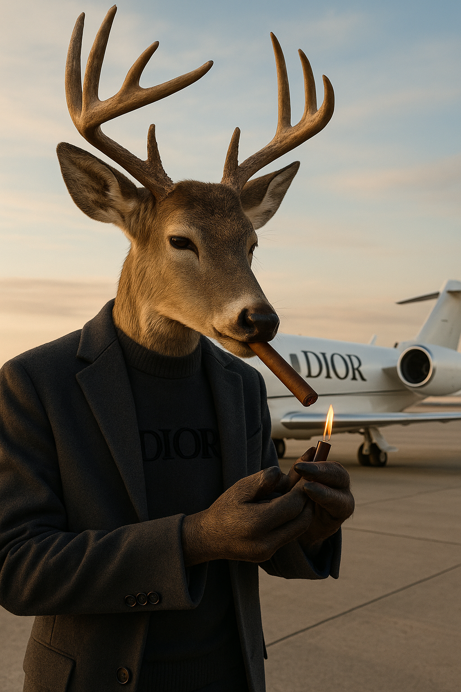
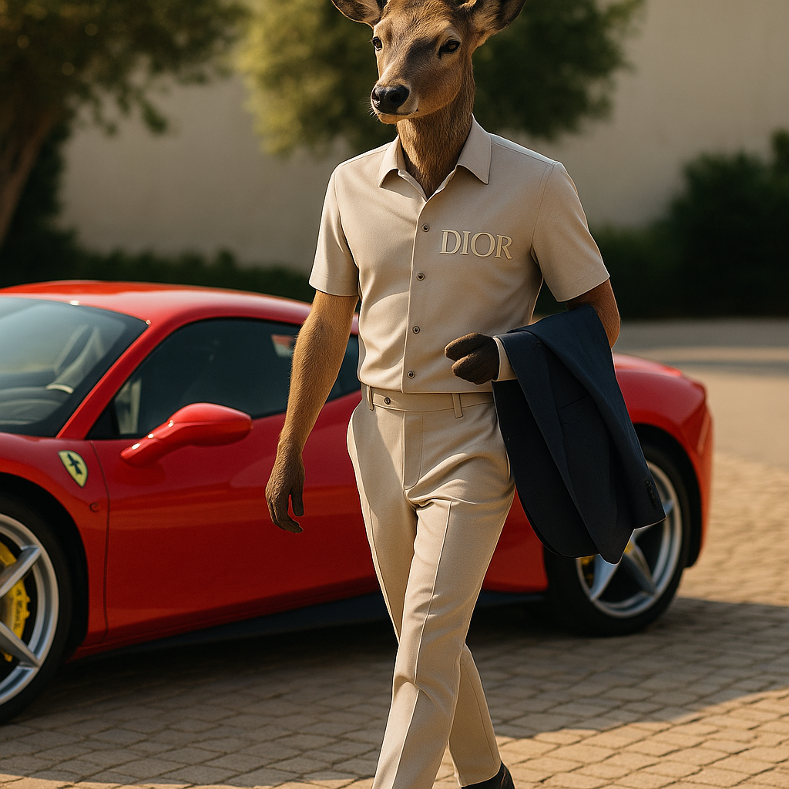
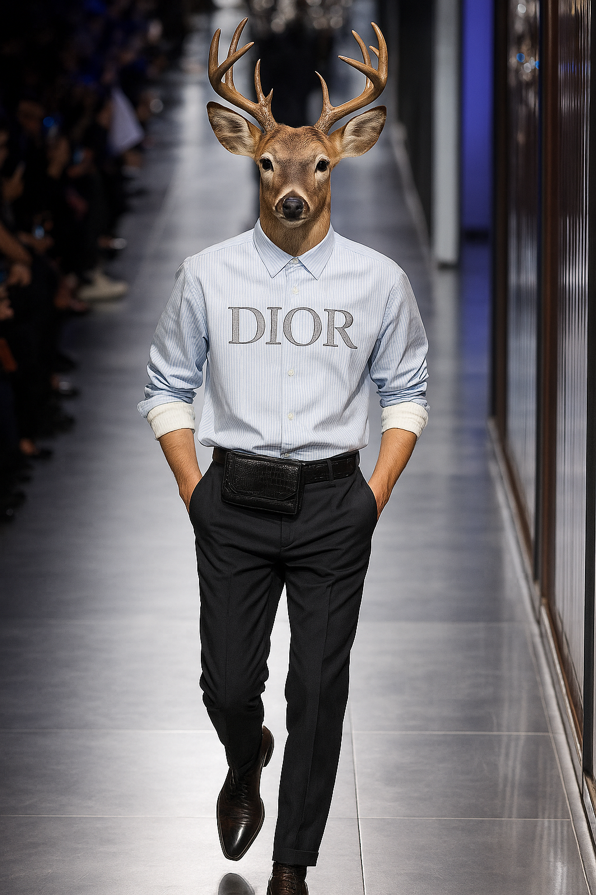

In the quiet heart of an old-growth forest, far from catwalks and cameras, Mr. Deer was born—graceful, alert, and strikingly poised even from a young age. Where others saw a creature of instinct, he felt something more: a calling. Not for survival, but for style. While other fawns leapt through meadows, Mr. Deer admired reflections in still water, adjusting posture, imagining silhouettes, dreaming of elegance.
His fascination with fabric, movement, and form was instinctual. But the idea of entering the human fashion world was, at best, unthinkable—and at worst, laughable.
Breaking into an industry ruled by humans meant pushing beyond every barrier—physical, cultural, and perceptual. His first casting call ended with stunned silence. His first photoshoot was cancelled before it started. He wasn't just "different"; he was impossible in the eyes of many.
But Mr. Deer did not ask for permission. He brought poise where others brought performance. His presence—stately, controlled, raw—eventually caught the eye of a visionary Dior creative director who saw not an animal, but iconography.
The campaign went viral.
His Dior debut was nothing short of historic. Wearing a double-breasted black coat over an ivory rollneck, Mr. Deer stepped onto the runway with an elegance that made critics silent and audiences erupt.
He didn’t just walk—he commanded. Every antlered silhouette became a symbol: of disruption, of grace, of untamed beauty redefined by discipline. But behind the scenes, he was pushing harder than anyone else—training for balance, composure, timing. There was no room for error when you were already considered an anomaly.
He wasn’t just keeping up. He was outshining.
Fame came with whispers. “Is it a stunt?” “A gimmick?” “A phase?”
Mr. Deer knew that being the first meant carrying more than his own ambition. He carried expectation, stereotype, and scrutiny. But what others saw as a novelty, he transformed into normalcy through consistency. Through excellence.
It was not just about fashion—it was about acceptance. Each editorial, each cover, each campaign became a quiet protest turned declaration: elegance has no species.
Now, Mr. Deer stands not only as the face of Dior—but as a symbol for possibility.
He is featured in campaigns from Tokyo to Paris, headlining shows from Milan to New York. His antlers, once questioned, are now signature. He is more than a model—he is a muse.
Young talents, misunderstood creatives, and outsiders across industries point to him and say, “If he could, maybe I can.”
He answers every question about his success the same way:
“I just gave 200%, every time. The world gave me a label. I gave it legacy.”